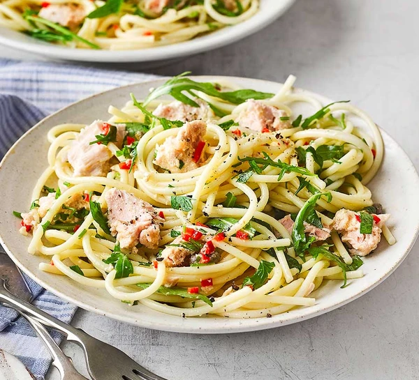

Tuna, Caper & Chilli Spaghetti

Ingredients
- spaghetti or linguine
- 1 tbsp olive oil
- 1 garlic clove, sliced
- 1 red chilli, deseeded and finely chopped, plus extra to serve (optional)
- 1 tbsp drained capers
- small bunch of parsley, finely chopped (stalks included)
- 145g tuna in spring water, drained
- 90g rocket or baby spinach leaves
- ½ lemon, juiced
Steps
-
Cook the spaghetti for 9-11 mins in a large pan of well-salted water until al dente.
-
Heat the oil in a wide frying pan over a very low heat,
and gently cook the garlic and chilli to infuse the oil.
Remove from the heat if the garlic is turning past light golden, as this will make it bitter.
-
Drain the pasta, keeping a cupful of the cooking water, and tip the spaghetti into the frying pan.
Toss the pasta in the oil over a low heat,
adding a little of the pasta water to emulsify into a sauce that coats the pasta,
then fold in the capers, parsley, tuna and some seasoning.
Don’t stir too vigorously – you want to keep larger chunks of tuna.
Toss the rocket and lemon juice through the spaghetti, and serve with extra chilli scattered over,
if you like.
Home